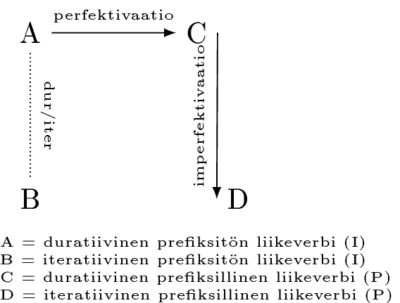
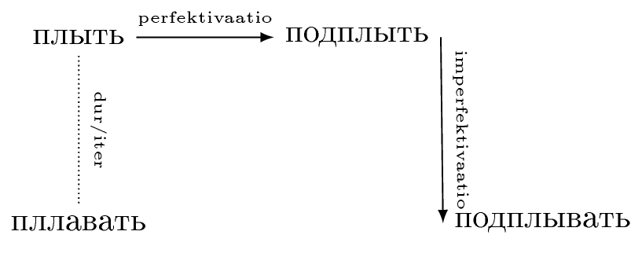

Liikeverbit prefikseillä
1 Muodostuksesta
Edellä todettiin, että ilman prefiksejä esimerkiksi verbit бежать - бегать muodostavat parin suhteessa ominaisuuteen, jota A.V. Isachenko nimittää termillä характер действия ja joka liittyy siihen, miten verbit ilmaisevat liikkeen suuntaa. Tarkastellaan nyt vastaavia verbipareja tilanteessa, joissa verbivartaloihin on liitetty prefiksejä.
1.1 Isachenkon muodostusteoria
A.V. Isachenko (2014) lähti jo 1960-luvulla siitä ajatuksesta, etteivät prefiksilliset liikeverbit liikeverbit voi olla poikkeuksia sääntöön, jonka mukaan prefiksin liittäminen prefiksittömään imperfektiivisen aspektin verbiin tuottaa perfektiivisen aspektin verbin. Tämä standardinmukainen perfektivaatioprosessi näkyy esimerkissä 1:
- благодарить - поблагодарить
Ensi näkemältä liikeverbit eivät kuitenkaan sovi tähän perfektivaatiokaavaan. Vaikka duratiiviseen liikeverbiin (идти-tyyppi) liitettävät prefiksit tuottavatkin perfektiivisen aspektin verbejä (пойти, пролететь, переплыть jne.), vaikuttaisi siltä, että iteratiiviset verbit pysyvät edelleen imperfektiivisinä (jollaisia ovat kaikki etuliitteettömät): ходить - проходить, летать - прилетать, носить - выносить jne.
Isachenko esittää kuitenkin, että kaikki prefiksilliset liikeverbit muodostetaan seuraavaa kaavaa noudattaen:
Kuvio 1. prefiksillisten liikeverbien muodostus
Kuviossa 1 iteratiivinen verbi ei ole lainkaan prefiksillisten liikeverbien muodostuksen pohjana. Sen sijaan duratiivisesta verbistä muodostetaan ensin perfektiivisen aspektin verbi liittämällä tähän prefiksi. Tästä prefiksillisestä verbistä muodostotetaan edelleen (sekundäärinen imperfektivaatio) imperfektiivisen aspektin prefiksillinen liikeverbi.
Tämä muodostusmalli toimii uskottavasti verbien тащить–таскать, катить–катать, плыть–плавать, лезть–лазить, ползти–ползать, ехать-ездить ja бежать-бегать kanssa. Sijoitetaan kokeeksi kuvioon 1 verbipari плыть-плавать:
Kuvio 2. плыть ja johdokset
Kuviosta 2 huomataan, että подплывать-verbi todella vaikuttaa muodostetun подплыть-verbistä ыва-suffiksin kautta. Vastaavasti:
- подкатить – подка́тывать
- подтащить – подта́скивать
- подбежать – подбега́ть
- подползти – подполза́ть
- подъехать – подъезжа́ть
- подлезть – подлеза́ть
Huomaa, että kuten missä tahansa sananmuodostustilanteessa, myös näissä tapauksissa havaitaan myös äänteenmuutoksia, kuten щ–ск. Itse imperfektivoiva suffiksi vaihtelee painollisen a:n ja ы/ива:n välillä.
Tätä muodostusteoriaa on myöhemmin puolustaneet myös A. Zaliznjak ja A. Smelev (2000).
Mallille aiheuttavat kuitenkin ongelman muut liikeverbit, joissa imperfektiivisten liikeverbien muodostus tuntuu tapahtuvan liittämällä prefiksi suoraan iteratiiseen liikeverbiin. Vertaa seuraavia iteratiivinen verbi + prefiksillinen imperfektiivisen aspektin liikeverbi -yhdistelmiä:
- ходить - приходить
- носить - приносить
- летать - прилетать
- гонять - пригонять
- водить - приводить
- возить - привозить
Kaikissa näissä tapauksissa vaikuttaisi selvältä, että prefiksi liittyy iteratiivisen verbin vartaloon. Isachenkon mukaan kyse on kuitenkin ainoastaan homomorfeista: on kielihistoriallinen sattuma, että приносить-verbin носить-morfi on identtinen носить-verbin morfin kanssa. Tämän käsityksen puolustukseksi Isachenko esittää seuraavat neljä perustelua:
- Tavallisesti prefiksin liittäminen imperfektiiviseen verbivartaloon tuottaa aina perfektiivisen aspektin verbin
- Jos приходить on muostotettu ходить-verbistä, miksi sitten притаскивать ja muut vastaavat vaikuttavat selvästi olevan muodostettuja притащить-tyypin verbeistä (ei ole olemassa esimerkiksi verbiä приплавать)?
- Muista slaavilaisista kielistä löytyy esimerkkejä myös muun muassa нести-носить-verbiparin vastineista, joiden osalta приносить-tyypin verbi vaikuttaa selkeästi muodostetun suffiksaatiolla
- prefiksi + iteratiivinen verbi tuottaa myös perfektiivisiä verbejä, nimittäin johonkin teonlaatuun kuuluvia kuten заходить merkityksessä ‘alkaa kävellä’, сходить merkityksessä ‘käydä kerran’, tai поносить merkityksessä ‘kantaa vähän aikaa’.
1.2 Isachenkon teorian kritiikkiä
Edellä esitety perustelut eivät kuitenkaan monien tutkijoiden mielestä riitä osoittamaan intuitiivisesti oikealta vaikuttavaa при + носить - muodostusteoriaa vääräksi. Esimerkiksi Laura Janda (2010) toteaa, että Isachenkon teoria on liiaksi kiinni käsityksessä, jonka mukaan prefiksin liittäminen ei missään tilanteessa voisi tuottaa imperfektiivisen aspektin verbiä.
1.3 Oikeinkirjoituksesta
Liitettäessä prefiksejä iteratiivisten ja duratiivisten verbien vartaloihin kannattaa muistaa seuraavat tapaukset:
- Kun йдти-verbiin (myös preteritissä) liitetään konsonanttiin päättyvä prefiksi, prefiksin ja vartalon väliin lisätään о:
- сойти, обойти, вошёл, подошёл jne.
- Kun ехать-verbiin liitetään konsonanttiin päättyvä prefiksi, prefiksin ja vartalon väliin lisätään Ъ:
- съехать, въехать jne.
1.4 Prefiksilliset liikeverbit aspektipareina
Oli liikeverbien muodostustavasta mitä mieltä tahansa, on huomattava, että prefiksillisten ja prefiksittömien liikeverbiparien välisissä suhteissa on eräs merkittävä ero: siinä missä etuliitteettömät verbit eroavat toisistaan toiminnan luonteen suhteen (liikkeen yksisuuntaisuus/suuntaisuuden ilmaisemattomuus), etuliitteellisillä verbeillä ero on aspektuaalinen. Vertaa seuraavia lauseita:
- Папа ходил в магазин
- Папа шёл в магазин
- Папа проходил мимо магазина
- Папа прошёл мимо магазина
Lauseessa 2 iteratiivinen verbi ilmaisee liikettä kahteen suuntaan, lauseessa 3 duratiivinen verbi ilmaisee liikkeen yksisuuntaisena. Lauseiden 4 ja 5 välinen ero kuitenkin on nimenomaan aspektuaalinen: lauseessa 4 проходить kuvaa toiminnan sisäisesti rajaamattomana, niin että lauseen isä kuvataan kulkemassa juuri kaupan ohitse; lauseessa 5 прошёл kuvaa toiminnan sisäisesti rajattuna, niin että kauppa on jo ohitettu.
2 Prefiksit ja merkitykset
Seuraavassa on kuvattu lyhyesti eri prefiksien tavallisesti mukanaan tuomat merkitykset (ks. Скворцова 2003: 56–58)
2.1 У
- liike pois, pidemmäksi aikaa / kauemmaksi
- Он был единственным сыном в семье, были еще две старшие сестры, которые уехали из России в 1918–1919 годах (Маринина 2013)
- Брат уходит на работу через 15 минут
2.2 Вы
- liikkua sisältä ulos
- ylittää kahden tilan välinen raja ja jättää raja taakseen
- ilmaisee myös lähtöpistettä, etenkin lähtöajan yhteydessä
- poistua hetkeksi
- Затем мы вылетели из Соединенных Штатов и прибыли в Японию (supotnitskiy.ru n.d.)
- Естественно, если вы впервые выехали за пределы Родины, то основной проблемой для вас наверняка является вопрос проживания на отдыхе (tisamsebegid.ru n.d.)
- Вышел на минуту протереть лобовое стекло и в мгновение лишился сумки, которая лежала на заднем сиденье («Автопилот» 2002)
2.3 При
- Tulla jonnekin, ilmestyä jonnekin
- Олег приехал в Питер
2.4 За
- Poiketa varsinaiselta reitiltä ja tulla / päätyä jonnekin vähäksi aikaa
Huomaa käyttö myös puhuttaessa internetissä liikkumisesta:
- Уважаемый посетитель, Вы зашли на сайт как незарегистрированный пользователь
- Päätyä jonnekin kauas, jonkin rajan taakse
- Предположительно, он заплыл в подводную пещеру Ko Poo и не смог выбрать… (1tvnet n.d.)
- Muu negatiivinen seuraus
2.5 Под
- lähestyä jotakin
- Гарри подбежал к окну, игнорируя пораженные вопли Флитвика (skazkapro.net n.d.)
2.6 В
- liikkua/liikuttaa sisälle
- ylittää kahden tilan välinen raja
- На жарком африканском солнышке сохло все это моментально. И земляная насыпь перед пирамидой, чтобы втаскивать туда каменные блоки, была не нужна (africana.ru n.d.)
- Да так сильно, что бур просто влетел в зону аномально высокого пластового давления. (x-files.org.ua n.d.)
2.7 Про
- ohittaa / jättää taakseen
- mennä sisään ja edetä peremmälle jossakin tilassa tai ensin edetä ja sitten astua sisälle
- kulkea suoraviivainen reitti
- Мы прошли в отдел новых поступлений, и девушка принесла мне женскую сумку Gianfranco Sisti (www.burguy.ru n.d.)
- Они прошли в дом через большую каменную террасу (Куприн. 1911)
2.8 Пере
- liikkua jonkin puolelta toiselle
- vaihtaa (asuin-)paikkaa
- … он и есть тот самый мостик, через который русские антикоммунисты перебежали из Европы в Аргентину в 1947г. (zhistory.org.ua n.d.)
2.9 От
- loitota pieni etäisyys / vähäksi aikaa
- Toimittaa jokin sinne, minne se kuuluu / toimittaa joksikin aikaa / (palauttaa) /
- Несколько парней почти сразу отбежали в сторону (lenalevina.com n.d.)
- Утром мать отвела дочку в детский сад
- По просьбе Генри я отвез рукопись ему (www.ihst.ru n.d.)
2.10 до
- saavuttaa jokin raja
- matkan luonnehdinta
- За 40 вас довезут до аэропорта (365tours.ru n.d.)
- Как вы доехали?
2.11 о
- liikkua ympäri
- käydä useissa paikoissa
- Он обежал поляну и бросился вон, а за ним - вся стая (pravislava.al.ru n.d.)
- я объехал США вдоль и поперек и такого не видел (www.km.ru n.d.)
2.12 с
- laskeutua
- kerääntyä yhteen paikkaan
- Лыжник съехал с горы (Скворцова 2003)
- В Московской консерватории 23 октября сошлись Восток и Запад. (iran.ru n.d.)
2.13 Раз
- hajaantua eri suuntiin
- Милиция поговорила с ребятами, они разошлись и, собственно, ничего не произошло. (oko-planet.su n.d.)
2.14 Вз
- nousta ylös
- Они уже взошли на вершину холма, от остальной компании их скрывала полуразрушенная стена (lib.ru n.d.)
- Солнце уже взошло.